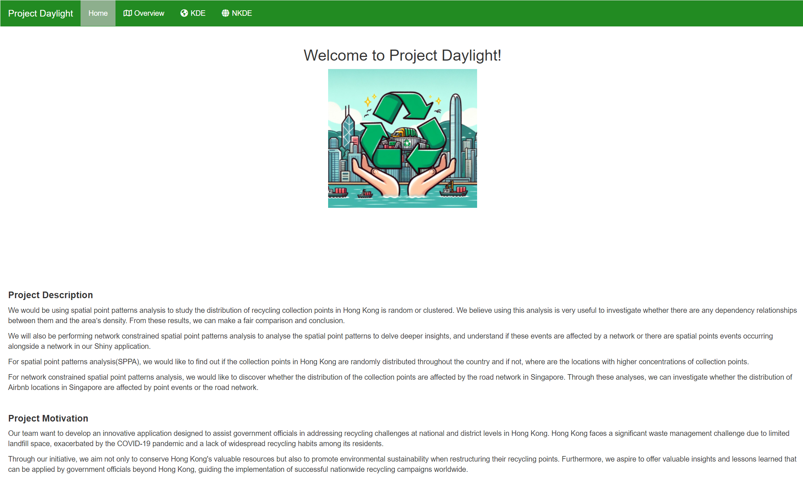
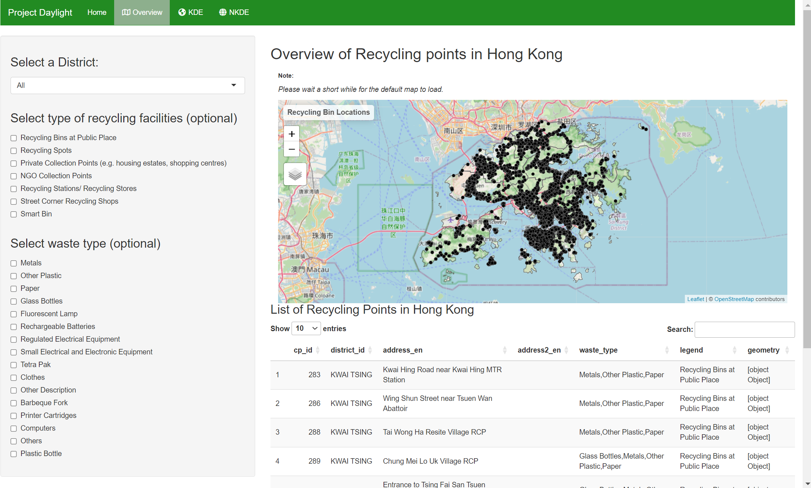
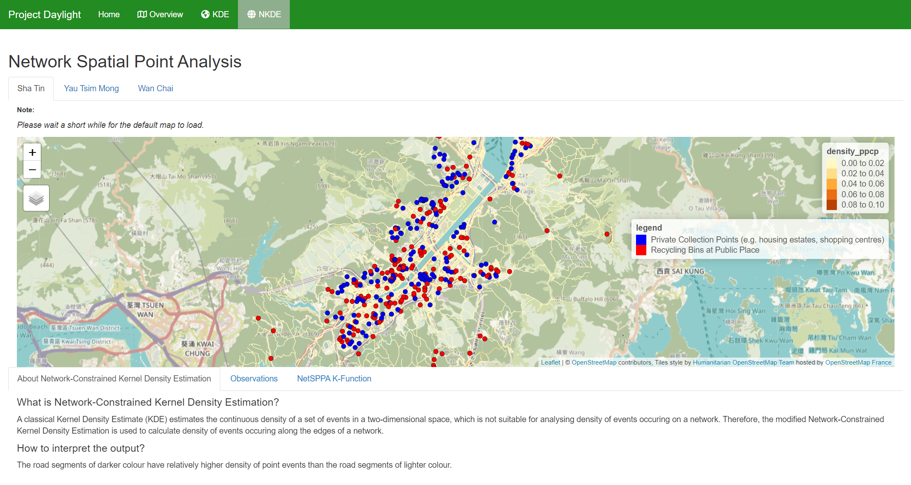
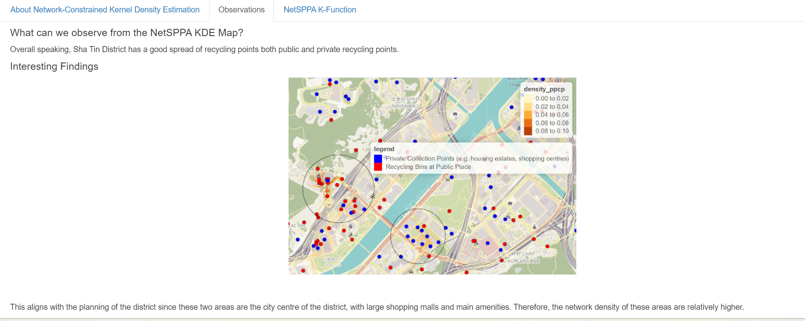
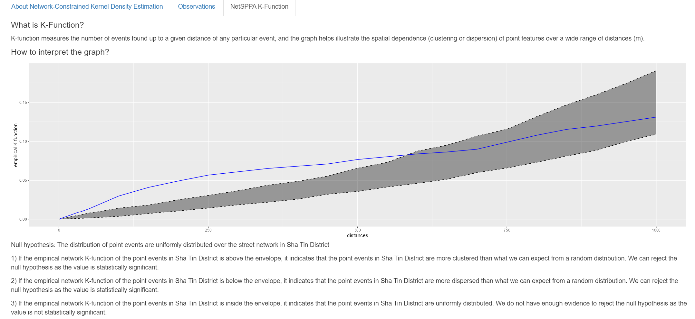

User Guide of Our Shiny Application
Welcome to the user guide of our Shiny Application. In this guide, we will provide you with a detailed overview of how to navigate and utilize the features of our Shiny Application effectively. Whether you are a first-time user or someone familiar with the application, this guide will help you understand the functionality, provide step-by-step instructions on how to perform key tasks, and offer tips to enhance your user experience. Keep reading to make the most out of our application and discover the tools that will support your needs.

This is our homepage. You will find a nagvigation bar on top which it can bring you to our other pages:
Overview
Kernal Density Estimation (KDE)
Network Kernal Density Estimation (NKDE)
You may also learn more about our project and project motivation by scrolling through our homepage.
Overview

On this page, users are presented with a comprehensive map and listing of recycling points across Hong Kong, designed to facilitate easy identification and location of recycling facilities.
To navigate the page, users can begin by selecting a specific district from the ‘Select a District’ dropdown menu to filter the recycling points displayed on the map and in the list below. Additionally, users have the option to further refine their search based on the type of recycling facilities or the waste material by checking the appropriate boxes under ‘Select type of recycling facilities’ and ‘Select waste type’.
The map on the right-hand side gives a visual representation of recycling points, marked by black icons, against the backdrop of Hong Kong’s geography. Users can zoom in or out using the ‘+’ and ‘-’ buttons for a closer look at a specific area. Clicking on a map icon may provide more details about that location.
The table below the map titled ‘List of Recycling Points in Hong Kong’ enumerates the recycling points, displaying important information such as the ID, district, address, and types of waste accepted. The table can be navigated using the pagination controls and can be searched using the search bar, allowing users to quickly find specific recycling points by address or waste type.
Users are advised to allow a moment for the map to load upon their first visit to the page, as indicated by the note at the top of the map section. This interactive tool is designed to empower citizens to participate in recycling efforts by providing a user-friendly and informative platform.
KDE
NKDE (Network Kernal Density Estimation)

On this page, the Network Spatial Point Analysis feature is showcased to provide users with a visual and statistical understanding of the distribution of recycling facilities across different districts in Hong Kong. This tool employs Network-Constrained Kernel Density Estimation (NetKDE) to present a more accurate depiction of the density of recycling points along the road network, rather than just their two-dimensional spatial distribution.
Users can select among different districts, such as Sha Tin, Yau Tsim Mong, and Wan Chai, to focus the map view on areas of interest. The map itself illustrates the density of recycling points, using a color-coded system where red dots represent private collection points (e.g., housing estates, shopping centers) and blue dots signify recycling bins at public places.
The density_ppcp key on the right side of the map explains the color gradient associated with road segments, which reflects the density of nearby point events. Darker shades on the roads indicate higher densities of recycling facilities, while lighter shades correspond to lower densities.
Users can zoom in and out using the plus and minus buttons to examine the map more closely. It’s essential to give the map a short while to load the default view upon entering the page.
In addition to the NKDE Map, additional tabs like “About Network-Contrained Kernal Density Estimation”, “Observation” and “NetSPPA K-Function” are included for users to explore a bit more about the NKDE.
Observations

In the ‘Observations’ tab, we delve into the findings from the NetSPPA KDE map of each district and some interesting findings from the district.
NetSPPA K-Function

We explore a statistical measure of spatial relationships among the recycling points. The K-function graph is a tool used to determine whether the points (in this case, recycling facilities) are clustered, dispersed, or randomly distributed across the network. In this instance, the empirical network K-function plotted against the distance shows a curve in relation to the shaded envelope, which represents the expected distribution if the points were randomly placed.